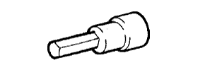
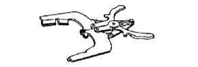

Cylinder Block Assembly (2AZ-FE) Preparation [Reassembly]
| 09011-38121 | Socket Wrench (12mm) | |
 | 09040-00020 | Socket Hexagon Wrench Set |
 | (09043-20050) | Socket Hexagon Wrench 5 |
| Torx Socket Wrench E5 | ||
| Torx Socket Wrench E7 | ||
| Plastic Hammer | ||
| RC-25 | Piston Ring Compressor Supplied by Banzai Ltd. | |
 | Z-202 | Piston Ring Tool Supplied by Banzai Ltd. |
| PRC-12 | Piston Ring Compressor Supplied by Iyasaka Co., Ltd. | |
| RE-202 | Piston Ring Tool Supplied by Iyasaka Co., Ltd. | |
| Vernier Caliper | ||
 | TMA-20 | Thermometer Supplied by Banzai Ltd. |
| TH-10A | Thermometer Supplied by Iyasaka Co., Ltd. |
 | PG-1 | Press Gauge Measuring Range: 0.025 to 0.076 Supplied by Banzai Ltd. and Iyasaka Co., Ltd. |
 | QL-25N | QL Torque Wrench (25N) Supplied by Banzai Ltd. and Iyasaka Co., Ltd. |
| QL-50N | QL Torque Wrench (50N) Supplied by Banzai Ltd. and Iyasaka Co., Ltd. |
| Toyota Genuine Engine Oil | ||
| Paint |